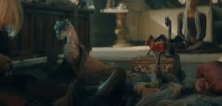
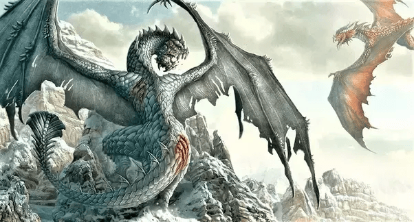
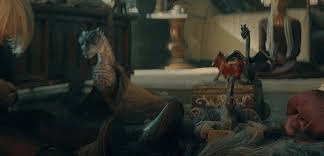
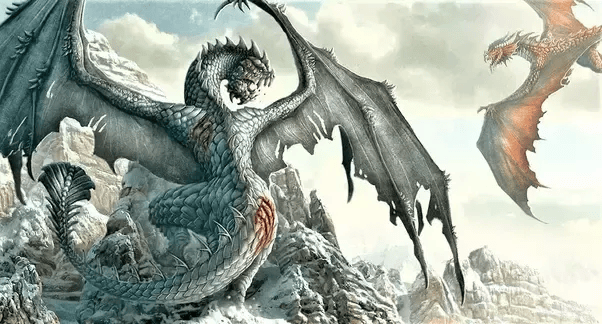

Balerion
Chamado de Terror Negro, foi um dragão da Casa Targaryen. Ele foi montado pelo rei Aegon I Targaryen durante a Guerra da Conquista.
Syrax
Foi uma dragão-fêmea. Ela foi montada exclusivamente por Rhaenyra Targaryen. Seu nome veio de uma deusa de Valíria.
Arrax
Arrax foi um dragão montado pelo Príncipe Lucerys Velaryon durante a Dança dos Dragões.
Caraxes
Também chamado de Wyrm de Sangue e Verme Sangrento, foi o dragão montado pelo Príncipe Aemon Targaryen durante o reinado do Rei Jaehaerys I Targaryen e, mais tarde, pelo Príncipe Daemon Targaryen.
Seasmoke
Era um dragão cinza-claro. Era grande o bastante para combate durante a dança, mas ainda um jovem dragão, e mais ágil no ar do que seus irmãos mais velhos.
Vermax
Dragão montado pelo príncipe Jacaerys Velaryon. Ele prosperava e crescia a cada ano. O dragão ficou mal-humorado quando próximo de neve, gelo e frio.A cor de Vermax não é descrita nos livros.
Vhagar
Foi uma dragão-fêmea montada por Visenya durante a Conquista, ao lado do Balerion de Aegon o Conquistador e o Meraxes de sua irmã Rhaenys.
Sunfyre
Chamado de "Sunfyre, o Dourado", era o dragão montado pelo rei Aegon II Targaryen. Ele tinha escamas douradas brilhantes e era considerado o dragão mais belo de todos.
Meleys
Conhecida como a "Rainha Vermelha", Meleys era uma dragão-fêmea montada pela Princesa Rhaenys Targaryen. Ela era conhecida por sua velocidade e cor vermelha brilhante.
Tessarion
Apelidada de "Rainha Azul", Tessarion era uma jovem dragão-fêmea montada pelo Príncipe Daeron Targaryen. Ela tinha escamas de um azul brilhante e era incrivelmente ágil.
Tyraxes
Era um dragão montado pelo Príncipe Joffrey Velaryon. Ele ainda era jovem durante a Dança dos Dragões e não era tão grande quanto os dragões mais velhos.
Moondancer
Era uma jovem dragão-fêmea montada por Baela Targaryen. Ela era pequena, rápida e ágil, com escamas verde-claras que brilhavam à luz da lua.
Stormcloud
Era o jovem dragão montado pelo Príncipe Aegon III Targaryen. Ele era pequeno e ainda não estava totalmente crescido durante os eventos da Dança dos Dragões.
Dreamfyre
Era uma dragão-fêmea montada por Helaena Targaryen. Ela tinha escamas azul-prateadas e era uma das dragões mais antigos vivos durante a Dança dos Dragões.
Morghul
Dragão montado pela Princesa Jaehaera Targaryen. Ele era um jovem dragão durante a Dança dos Dragões e ainda não estava totalmente crescido.
Shrykos
Dragão montado pelo Príncipe Jaehaerys Targaryen. Assim como Morghul, ele era jovem e não estava totalmente crescido durante a guerra civil.
Silverwing
Era uma dragão-fêmea montada por Alysanne Targaryen, a esposa do Rei Jaehaerys I. Durante a Dança dos Dragões, ela era montada por Ulf Branco.
Vermithor
Conhecido como o "Fúria de Bronze", era o dragão montado pelo Rei Jaehaerys I Targaryen. Durante a Dança dos Dragões, ele foi montado por Hugh Martelo.
Cannibal
Dragão selvagem que vivia na Pedra do Dragão. Ele era conhecido por atacar e devorar outros dragões e suas crias. Não era montado por ninguém.
Grey Ghost
Dragão selvagem que vivia nas proximidades da Pedra do Dragão. Ele era tímido e evitava contato com humanos, preferindo caçar em alto mar. Não era montado por ninguém.